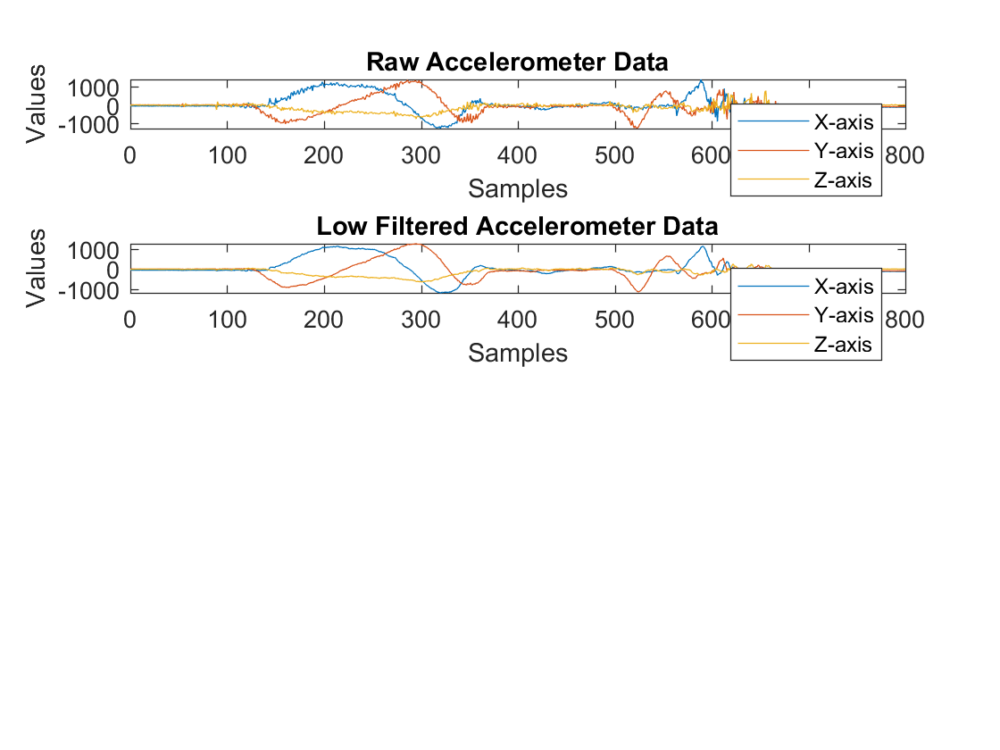
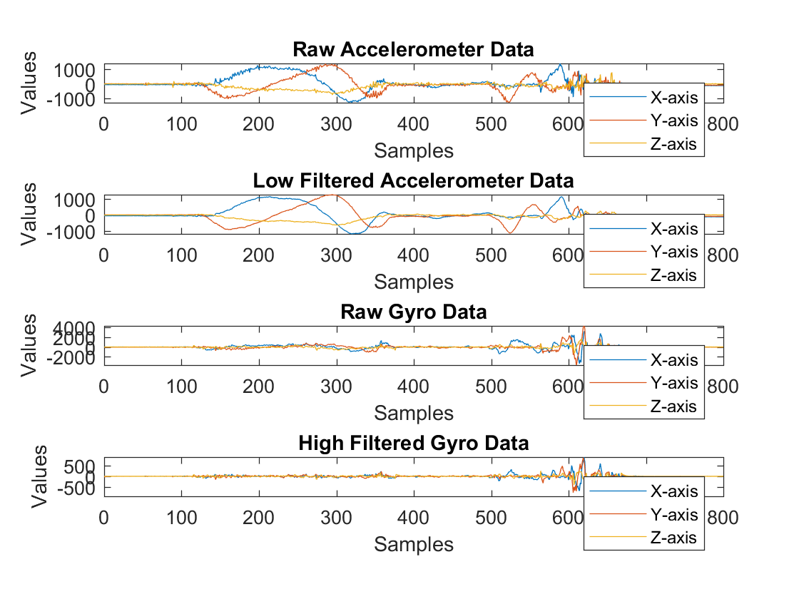
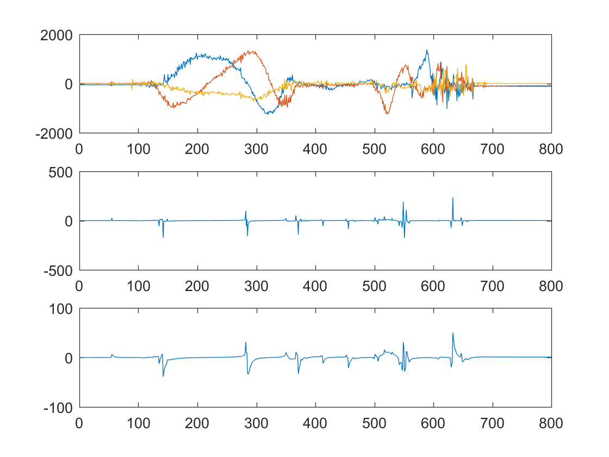

Contents
clear;
Sample Data Aquisition
sampledata = csvread('LPF_sampledata.csv');
samples = sampledata(:,1);
accel_x = sampledata(:,2)+365;
accel_y = sampledata(:,3)+20;
accel_z = sampledata(:,4)-1580;
gyro_x = sampledata(:,5);
gyro_y = sampledata(:,6);
gyro_z = sampledata(:,7);
Acclerometer -- Low Pass Filter
figure(1);
subplot(4,1,1);
plot(samples, accel_x, '-', samples, accel_y, '-', samples, accel_z);
title("Raw Accelerometer Data");
xlabel("Samples");
ylabel("Values");
legend('X-axis','Y-axis','Z-axis');
axis tight;
a = .75
subplot(4,1,2);
plot(samples, LPF(accel_x, a), '-', samples, LPF(accel_y, a), '-', samples, LPF(accel_z, a), '-');
legend('X-axis','Y-axis','Z-axis');
title("Low Filtered Accelerometer Data");
xlabel("Samples");
ylabel("Values");
axis tight;
a =
0.7500

Gyroscope -- High Pass Filter
subplot(4,1,3);
plot(samples, gyro_x, '-', samples, gyro_y, '-', samples, gyro_z);
legend('X-axis','Y-axis','Z-axis');
title("Raw Gyro Data");
xlabel("Samples");
ylabel("Values");
axis tight;
subplot(4,1,4);
plot(samples, HPF(gyro_x, a), '-', samples, HPF(gyro_y, a), '-', samples, HPF(gyro_z, a), '-');
legend('X-axis','Y-axis','Z-axis');
title("High Filtered Gyro Data");
xlabel("Samples");
ylabel("Values");
axis tight;
figure(2);
phi_accel = (accel_y./accel_x);
subplot (3,1,1);
plot(samples, accel_x, '-', samples, accel_y, '-', samples, accel_z);
subplot(3,1,2);
plot(samples, phi_accel);
subplot(3,1,3)
plot(samples, LPF(phi_accel, a));
 